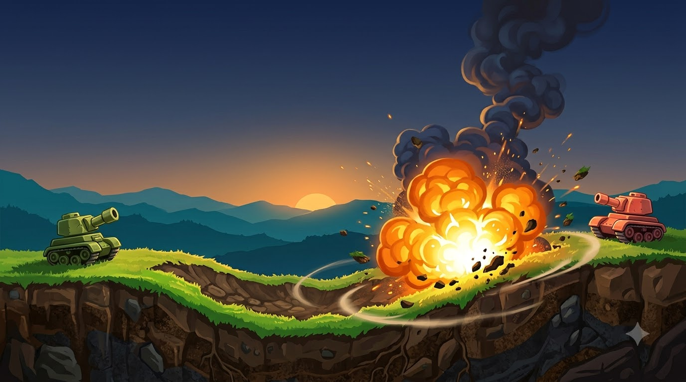
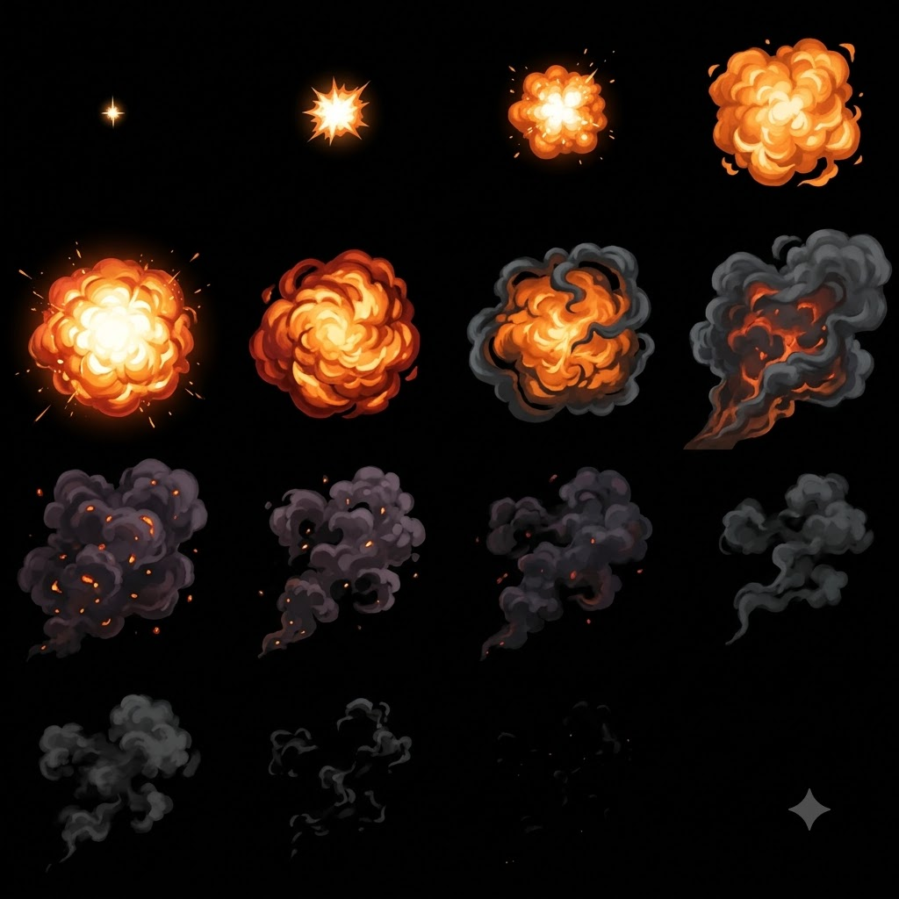

More shape. More fire. More character.
Three new Flow drafts, checked against the browser game’s terrain, projectile physics and Canvas effects system.

Battle concept
Good direction for tank shapes, dirt textures, lighting and fire. Use it for the look of the game or a menu image. The flattened picture cannot replace a live destructible battlefield.
Scenery layer
The sky and distant mountains fit behind the existing procedural terrain. Its 1376 × 768 image can be drawn directly by Canvas. The current export includes a Flow mark at the lower right.
Explosion sheet
Four by four cells, 256 px each, with attractive fire and smoke. It is an opaque JPEG, not transparent. Smoke alignment, cell-edge clipping and the marked final cell need attention before release.
Try the art over live terrain.
This isolated preview uses the game’s real terrain and projectile engine. Your saved match is separate.
The screen blend shows that the fire can be used as a light layer. It cannot reproduce opaque dark smoke. A transparent RGBA atlas is the appropriate production export. This preview omits the last cell because it contains the Flow mark.
Background draft
1376 × 768 RGB JPEG. No playable terrain or tanks are baked in. The bottom-right mark is preserved in the source.

VFX draft
1024 × 1024 RGB JPEG. The original file is preserved, including its mark. The preview reads 15 cells without rewriting the artwork.